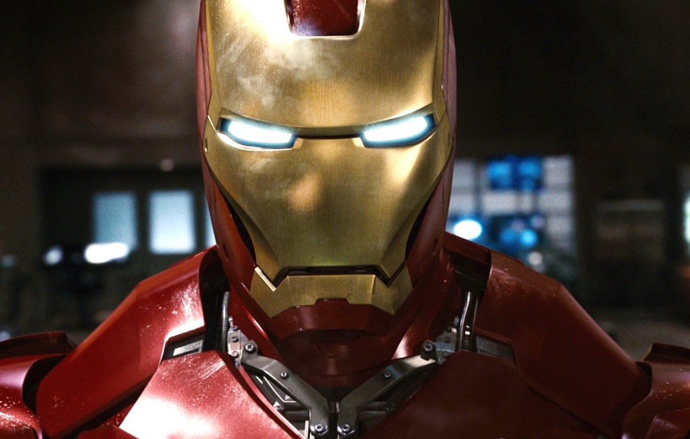
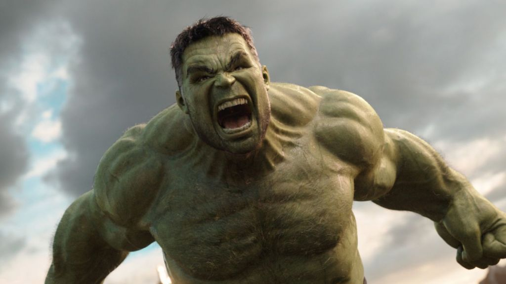
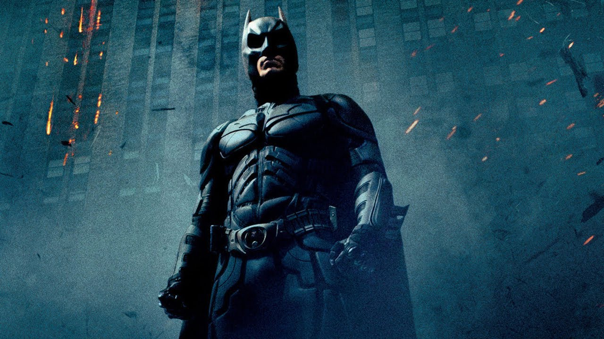
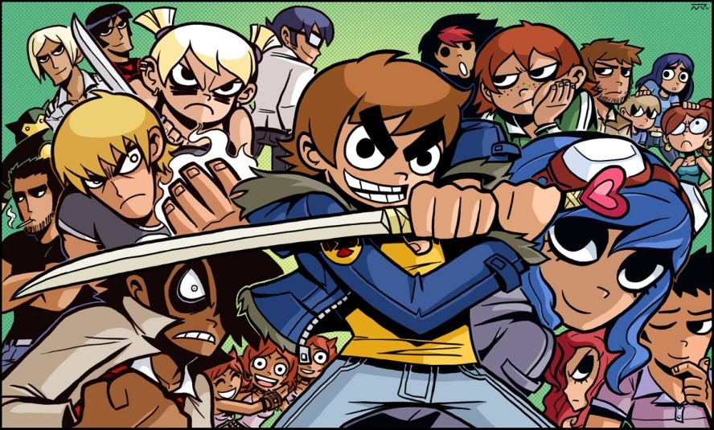
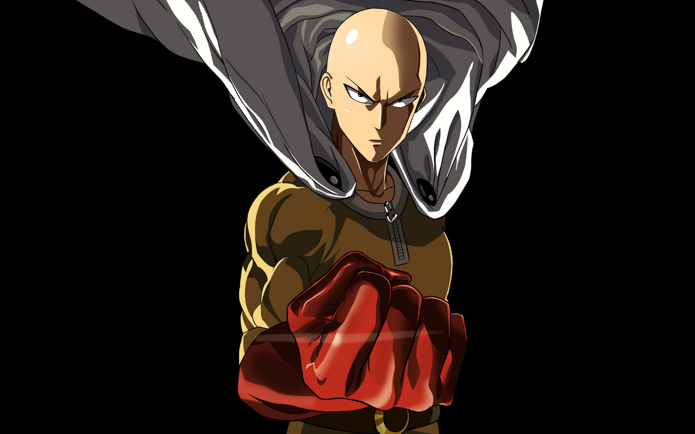
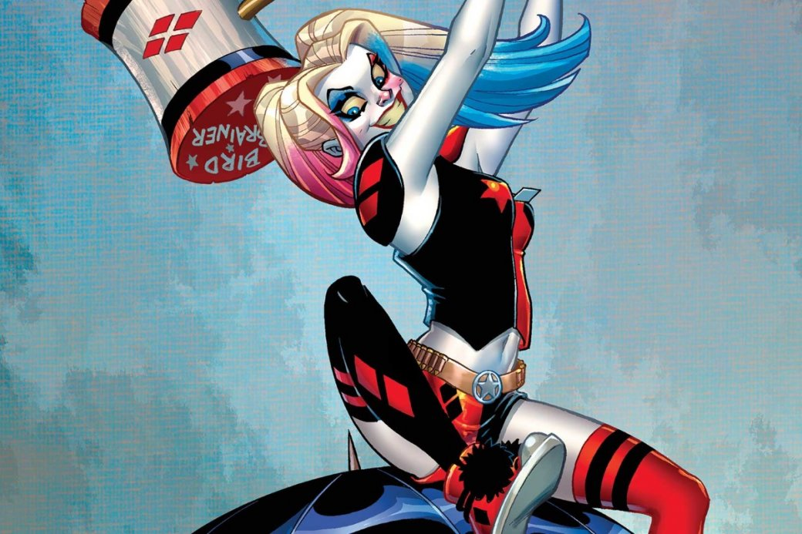
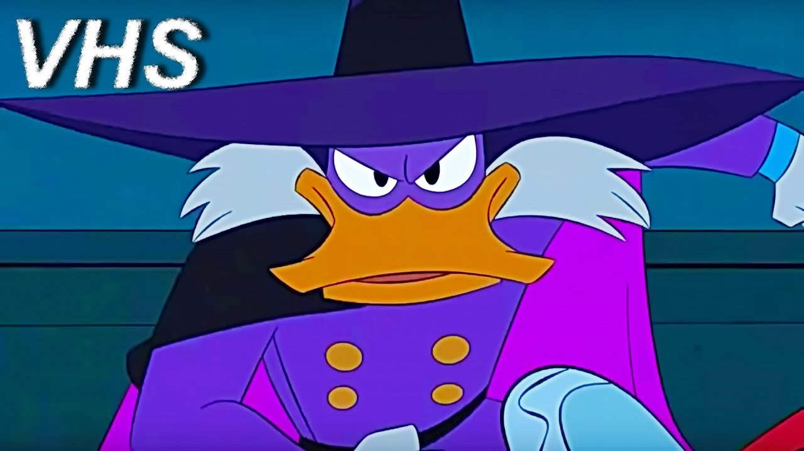
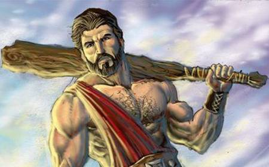

Привет, мы герои по найму!
Если вам нужен герой то вы попали по адресу. Здесь вы можете нанять любого героя, за приемлемую цену, если конечно в этой самой цене вы содейтесь. (кнопки работают как ссылки на страницы героев в Википедии)
Старк
Цена 20000$ в час
Сын богатого промышленника Говарда Старка, Тони был гениальным изобретателем и механиком. Он унаследовал бизнес отца в возрасте 21 года, превратив компанию в одного из лидирующих производителей оружия. Старк был ранен осколком в грудь во время полевого испытания на пригодность боевой брони, которая должна была наделить солдат боевыми способностями. Старка взял в плен оружейный барон Wong Chu, вынудив его создать оружие массового поражения — только тогда Тони получил бы операцию, необходимую для спасения его жизни.
Халк
Цена 20$ + компенсация ущерба
Во время экспериментального взрыва гамма-бомбы учёный Брюс Беннер бросился спасать подростка, приехавшего на испытательный полигон. Столкнув мальчишку, Рика Джонса, в траншею, сам Беннер оказался во взрыве, получив массивную дозу радиации. Позже он очнулся в лазарете, казалось, сравнительно невредимым, но ночью преобразовался в громоздкую серую форму, проломил стену и сбежал. Солдат из последовавшей поисковой партии назвал иначе неопознанное создание «громадиной» .
Бєтмен
Работает во имя справледливости
Бэтмен — тайное альтер-эго миллиардера Брю́са Уэ́йна, успешного промышленника, филантропа и любимца женщин. В детстве, став свидетелем убийства своих родителей, Брюс поклялся посвятить свою жизнь искоренению преступности и борьбе за справедливость. Подготовив себя физически и морально, он надевает стилизованный костюм летучей мыши и выходит на улицы города для противостояния преступникам[
Скотт Пилигрим
Работает за музыку
Скотт Пилигрим — 22-летний бас-гитарист рок-группы Sex Bob-Omb из Торонто. Он встречается со школьницей Найвз Чау, однако друзьям из группы, соседу по комнате Уоллесу Уэллсу и младшей сестре Стейси Пилигрим она не очень нравится. Скотт знакомится с девушкой-курьером Amazon, Рамоной Флауэрс, впервые увидев её во сне. Когда Sex Bob-Omb выступает в битве групп, на Скотта нападает Мэтью Патель, бывший парень Рамоны. Скотт побеждает его и узнаёт, что для того чтобы встречаться с Рамоной, нужно победить шесть её бывших.
One-Punch Man
Цена 10000$ за удар
бывший клерк по имени Сайтама, который совершает героические поступки ради собственного развлечения. Он с детства мечтал стать супергероем, и три года назад начал свои тренировки, которые довели его до того, что ныне он может одолеть любого соперника одним ударом.
Харли Квинн
Если это будет весело
Харлин Квинзел была прирождённой гимнасткой и, заработав спортивную стипендию, поступила в университет. Её интересовал престижный диплом психиатра, но напрягаться в учёбе она не собиралась — вместо этого девушка соблазняла преподавателей, по чьим предметам не успевала. Харли планировала стать популярным психологом с собственной серией книг и пошла работать в психиатрическую лечебницу Аркхэм, чтобы заработать себе имя на самых сложных случаях с маньяками-убийцами.
Чёрный Плащ
Работает только во вселенной утиных историй
супергерой, который живёт в вымышленном городе Сен-Канар. Но в обычной жизни он вовсе не герой, а простой гражданин — Кряк Лапчатый. У Чёрного Плаща есть приёмная дочь Гусёна. До знакомства с Зигзагом и Гусёной Кряк жил в высокой башне на главном мосту города, однако позже у него появляется полноценный дом. Башня остаётся штаб-квартирой Чёрного Плаща.
Геракл
Работает только 12 раз
Персонаж греческой мифологии, сын Зевса и Алкмены (жены Амфитриона). Появился на свет в Фивах, с самого рождения демонстрировал необыкновенную физическую силу и храбрость. При этом из-за вражды Геры он должен был подчиняться своему родственнику Еврисфею. В юности Геракл обеспечил родному городу победу над Эргином. В припадке безумия он убил собственных сыновей, а потому был вынужден пойти на службу Еврисфею.